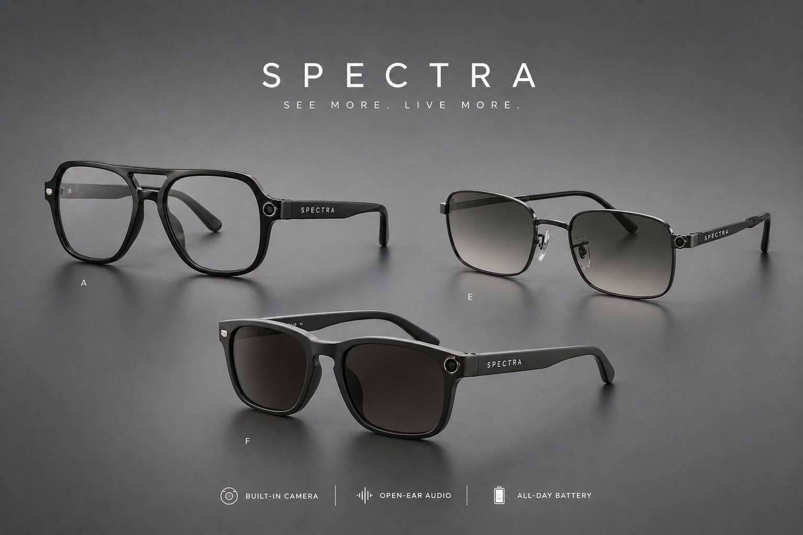

Chi Siamo
Crediamo in un modo nuovo di vivere la tecnologia: più naturale, più umano, più vicino alle persone.
Spectra nasce con l’obiettivo di superare i limiti tra mondo reale e digitale, trasformando un oggetto
quotidiano in uno strumento capace di ampliare ciò che puoi vedere e fare.
Non creiamo solo prodotti.
Creiamo esperienze pensate per accompagnarti ogni giorno.
Tecnologia per tutti
I nostri occhiali intelligenti integrano funzionalità avanzate in modo semplice e immediato.
Traduzione in tempo reale, navigazione aumentata e assistenza vocale lavorano insieme per offrirti supporto
continuo, senza distrazioni.
La tecnologia non deve complicare le cose.
Deve funzionare, adattarsi e migliorare davvero la tua esperienza.
